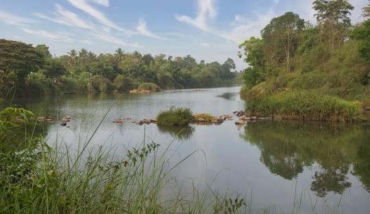
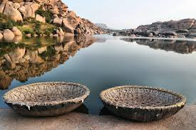

Karnataka Rivers
Discover the major rivers flowing through Karnataka, India.
Cauvery River
Origin: Coorg, Karnataka
Length: 805 km
Significance: The Cauvery is one of the most important rivers in southern India, providing water to the states of Karnataka and Tamil Nadu. It is also known as the lifeline of both these states.
Krishna River
Origin: Mahabaleshwar, Maharashtra
Length: 1,400 km
Significance: The Krishna River is one of the longest rivers in India, flowing through Karnataka, Maharashtra, and Andhra Pradesh, and it plays a vital role in irrigation and drinking water supply in the region.
Ganga
Origin: Himalayas, Uttarakhand
Length: 2,510 km
Significance: The Ganga is one of the most revered rivers in India, though its presence in Karnataka is more symbolic in terms of its significance to Hindu culture.
Tungabhadra River
Origin: Bhadravathi, Karnataka
Length: 531 km
Significance: The Tungabhadra is a tributary of the Krishna River and flows through the central parts of Karnataka. It is vital for irrigation and has the Tungabhadra Dam.
Sharavathi River

Origin: Western Ghats, Karnataka
Length: 128 km
Significance: Sharavathi is known for its scenic beauty and the Jog Falls, one of the highest waterfalls in India. It is an important river in the region, serving as a source of water and hydroelectric power.